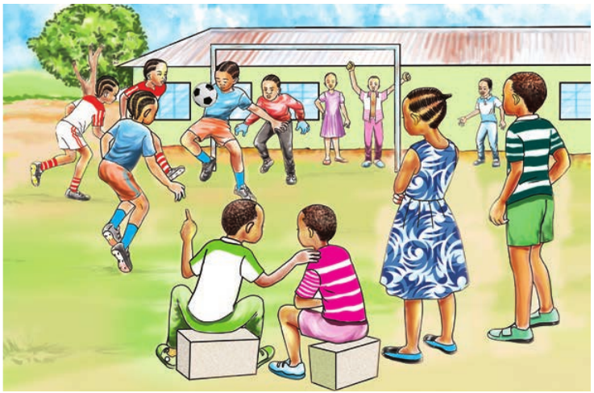

Musa’s birthday - questions and picture comprehension
My mother bought me a nice shirt. My father bought me a new pair of shoes. I liked their presents and thanked them. Our neighbours and friends gave me presents too. I was very happy.
Questions
Questions 1. How old is Musa?
2. What did Musa’s mother do in the morning of the 13th of January?
3. What present did Musa receive from his mother?
4. What present did Musa receive from his father?
5. What did Musa and his friends do?
6. When is your birthday?
7. What do you like about Musa’s birthday?
Activity 3
1. Study the following picture and answer the questions that follow:
